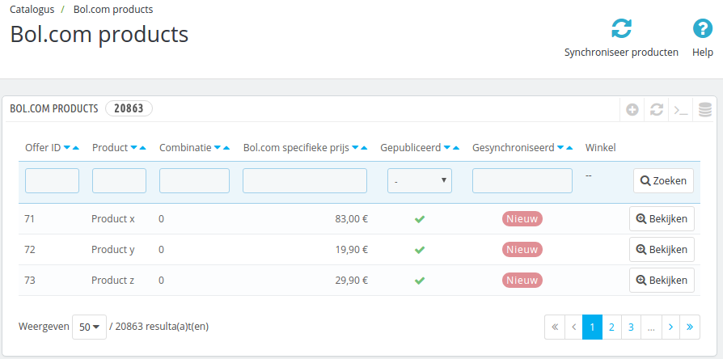

De tweede test die uitgevoerd dient te worden is de producten synchronisatie. Deze test is alleen van belang wanneer u uw producten wilt synchroniseren via Bol.com (en dus geen Excel bestand meer wilt gebruiken).
Kijk goed na of u de module in testmodus heeft geconfigureerd
Prestashop producten op Bol.com
Na het installeren van de module zijn er nieuwe opties in het menu van Prestashop gekomen. Een daarvan is Catalogus -> Bol.com producten. Wanneer u daar naartoe navigeert, ziet u een overzicht van alle producten in het systeem die op Bol.com gepubliceerd worden.

Producten selecteren
Binnen Prestashop dient u per product in te stellen hoe deze op Bol.com weergegeven dient te worden. Op de product bewerkpagina (onder Catalogus) vindt u een nieuwe tab met de titel Bol.com Plaza API connector. Op die tab staan de instellingen voor Bol.com.

Op deze tab ziet u voor alle productcombinaties een optie om deze te publiceren (via het vinkje onder Publiceren). Ook kunt u per combinatie een Bol.com geadverteerde prijs instellen (in het veld Specifieke prijs). Klik voor een product aan dat deze op Bol.com gepubliceerd moet worden.
Producten synchroniseren
Wanneer er een nieuw product wordt geselecteerd voor Bol.com, wordt deze direct naar Bol.com gemeld. Daarmee komt de status van dat product op OK. U kunt de status van de productsynchronisatie inzien op de Catalogus -> Bol.com products pagina. Indien de melding naar Bol.com mislukt, staat de status nog op Nieuw. Controleer of alles goed is gegaan door te controleren of het product in het overzicht op status OK staat.
Als er een status nieuw staat kunt u de knop Synchroniseer producten bovenin gebruiken om de producten te synchroniseren. De module zal de gewijzigde produten opnieuw aan Bol.com proberen aan te bieden.
Testdata verwijderen
In het Bewerk product scherm kunt u het vinkje bij Publiceren verwijderen en Specifieke prijs op 0 zetten. Hiermee wordt het product van Bol.com verwijderd.